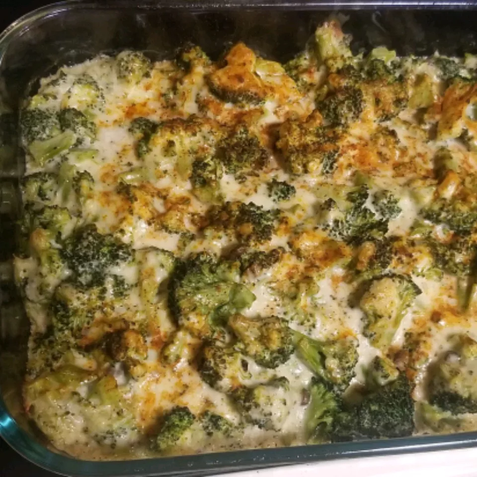

Broccoli-Cheese Casserole

Description
My mom made this broccoli cheese casserole every Thanksgiving when I was little. We kids could never get enough! If you have children or have some coming to visit you as guests this Thanksgiving, I guarantee that they will eat (and enjoy) this veggie dish. It's also fabulous with a Christmas ham.
Ingredients
- 1 (10.5 ounce) can condensed cream of mushroom soup
- 1 cup mayonnaise
- 1 egg, beaten
- ¼ cup chopped onion
- 3 (10 ounce) packages frozen chopped broccoli
- 8 ounces shredded sharp Cheddar cheese
- salt and pepper to taste
Steps
- Boil the noodles: Boil the macaroni in salted water until the noodles are al dente. Drain and transfer to a prepared baking dish.
- Make the cheese sauce: Melt butter, then whisk in the flour. Whisk in the milk, bring to a simmer, and stir in the cheeses. Season with salt and pepper and continue simmering until the sauce is thick. Pour the sauce over the noodles and stir.
- Make the topping: Melt two tablespoons of butter in a skillet, add the bread crumbs, and toast until the crumbs are brown. Spread the topping over the macaroni and cheese, then sprinkle with paprika.
- Bake the mac and cheese: Bake in the preheated oven until the topping is golden brown.